62 originaux supplémentaires : 57 médias, 4 captures de conversations et 1 document de transport. Les fichiers déjà présents dans la collection précédente ne sont pas dupliqués. Les essais restent historiques, y compris les variantes rejetées.
Ouvrir cette page après restauration. Le registre des générations conserve prompts, paramètres et statuts. La collecte ne constitue pas un export intégral des anciens chats.
BOJ.ART — V15 / ONE SIGNATURE SHOT — THE ART BREAKS REALITY. Make ONE uninterrupted 6-second vertical cinematic VFX shot, not a montage, not a fight, not a product demo. Begin EXACTLY on the supplied
Original · 12,617,015 octets
0328575e96c1d49c0290cccd34e51a61926ddf024d89b1cd5ad60dfde3790b76BOJ.ART V15B — TRUE PHYSICAL BREAKTHROUGH. One continuous, premium, high-energy 6-second 9:16 cinema VFX shot. The supplied START IMAGE is the actual BOJ.ART hand-painted resin sculpture in its worksh
Original · 14,070,719 octets
03d0290e2403c3556f4cbfe9f37053eda5b299f9072d72b14a2814453a7ae96aBOJ.ART V10 / TEST 25 — BREAKTHROUGH IMPACT. Four-second single-take premium cinematic VFX shot, 9:16, starts on the supplied REAL painted resin collectible in the actual workshop. Preserve exactly it
Original · 9,641,758 octets
1a4af9d8ed353419827e41ef4b9b0ad66823cdb11c89c032c761cc1ed67bc4b5BOJ.ART V12 TEST 35 — GLASS SIGNATURE / MATCHED ARENA LANDING. Four-second single cinematic shot. The photographed collectible is <<<a3f3caac-3b58-407d-b539-89ebb1f66045>>>. START IMAGE controls the o
Original · 8,442,930 octets
1cc44b7d33bcf03421d0555128dc50aa16879cea63352c03737dd3a6a1c8e6cdBOJ.ART V8 / SHOT 22 — BREAK THE PLANE. A single continuous six-second photoreal cinematic visual-effects shot, starting EXACTLY on this photograph of a hand-painted collectible in its workshop. Keep
Original · 12,533,046 octets
234be80cb8a52154b4ba26cac406ec3bc322f12d49566c2a680b38b335dd364fIMG_4574.png
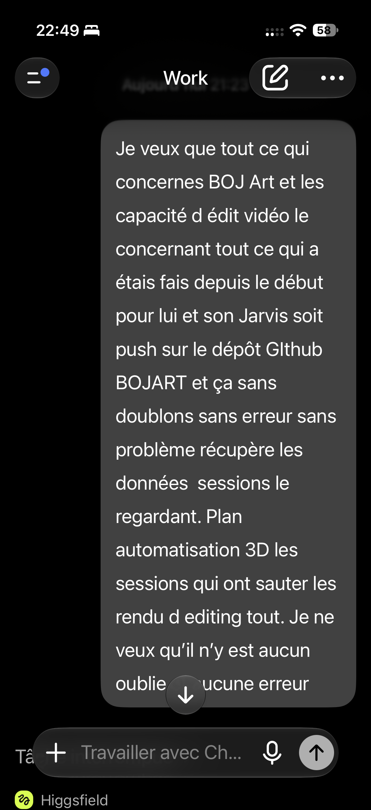
Original · 928,882 octets
251377675a082530306cbf736f2bd3698efbf7e10cb656f9e149c7e5dffcb646BOJART_RECUPERATION_CONTROLE_TRANSPORT.json
Original · 587 octets
28efa108513ee7de1db24a6969d11a76f4fbff0d83444e40649d13ddd5ecb059BOJ.ART PREMIUM TEST 34 — CRIMSON ARENA / SINGLE DEVASTATING EXCHANGE. A DIRECT four-second continuation from the supplied exact final frame of TEST 32. This is the SAME dark cinematic stage with over
Original · 9,957,132 octets
29d529f2e436be4b97a12093ebdf8f0176921e730925f35f438bd35f0aa6cd04IMG_4567.jpeg
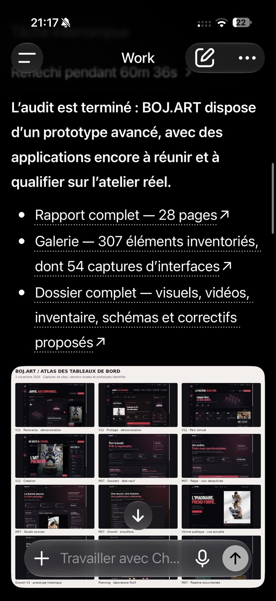
Original · 285,610 octets
2b84e92536905c1179e9026d29f1d125f05469a3ee5a1814b0b8232710716e92Référence source — input-008
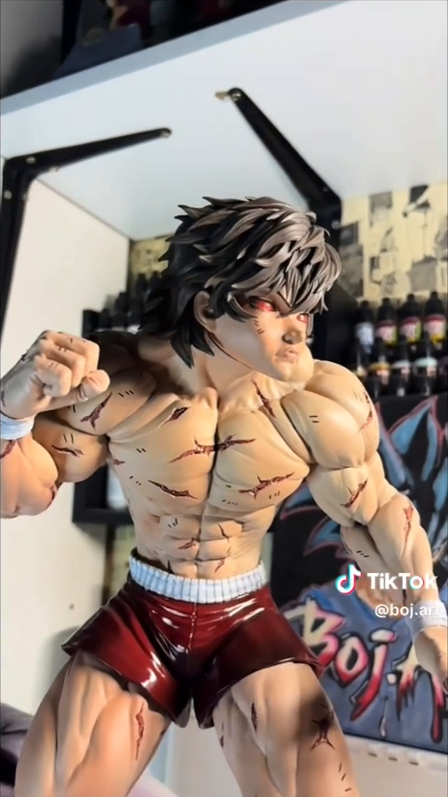
Original · 484,269 octets
2b99f4ab508a898c3d9e2703c8e6a64f7ad5431e1131f9247611737762484594Référence source — input-022
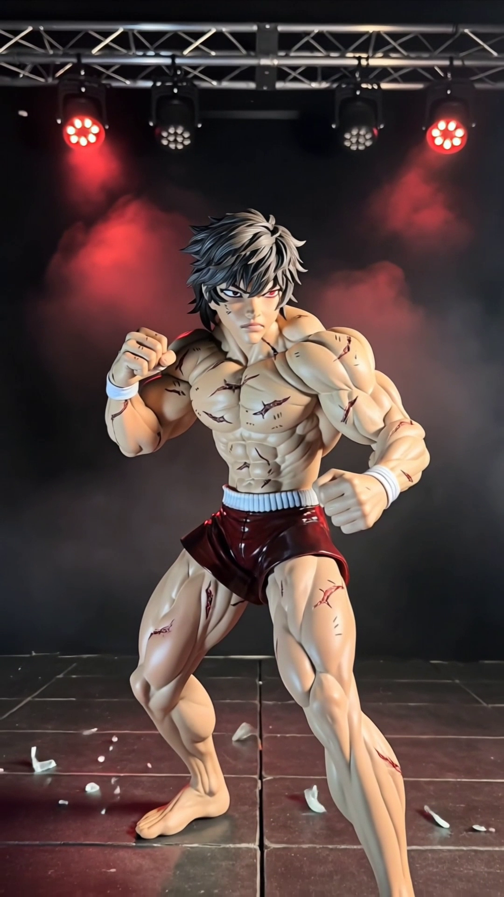
Original · 2,383,338 octets
2c3246324f0e2656a56514c96d8d3ba0798d94595650e6e7bec7038bb4b91392BOJ.ART V10 / TEST 26 — PARALLAX RUPTURE. Exactly four seconds, one smooth continuous hyper-kinetic VFX camera shot from the supplied actual hand-painted collectible in its workshop. The SAME sculpted
Original · 11,325,487 octets
2c943d2536e163aa57de99999b26c486fc7f2c4b63eef2cbc3d3753fa553216eBOJ.ART V18 / PREMIUM GALLERY REVEAL EDIT — RETOUCH THE SUPPLIED EXISTING FOUR-SECOND VIDEO, KEEP ITS EDITORIAL CAMERA PATH AND ORIGINAL CHARACTER. This is a luxury cinematic VFX finishing pass on the
Original · 3,290,138 octets
2e566bdec7046d50c627bc64358d733daf6b6774ef223d7d43fb9d073a781018BOJ.ART BREAK THE FRAME — TEST 17 FINAL IMPACT. Use the supplied successful fight video to keep the SAME two fighters and the SAME industrial concrete arena: dark spiky-haired muscular hero in black t
Original · 3,119,525 octets
3077e41d640107358ce8c0a8091229f78ed3434c6e004bb1cd2a6ed37dd70d74BOJ.ART BREAK THE FRAME — TEST 15 KLING BREAK EXIT. Start exactly on the supplied full-size vertical frame. The dark spiky-haired fighter on the left is the hero; keep his face, muscular anatomy, blac
Original · 4,848,444 octets
3aa03bf54c163450ae00a80915af221671a8be7a0709cb651a2fbcb7a9f50706BOJ.ART V16 / CONTINUATION SHOT — ONE DEVASTATING COUNTER. Four-second premium cinematic VFX shot continuing EXACTLY from the supplied final frame of the previous glass-break sequence. This is the SAM
Original · 10,198,078 octets
43c66fb1b999b74de76ecaf03d7fc2445ce8561750a0e32a5c7ccfc8d22a1fb7BOJ.ART / TEST 39 — THE BRUSHSTROKE COUNTER. Six-second continuous animated action shot, starting exactly in the supplied black/crimson arena after the glass breakthrough. Hero is the actual painted s
Original · 13,649,795 octets
44c64b2143c7390bf8966cbd6b2434827ced67820742bf3473e918c06ba6925cBOJ.ART V10 / TEST 28 — IMPACT FOLLOW-THROUGH AND ICONIC HERO CLOSEUP. Exactly THREE seconds, continuous kinetic cinematic VFX, beginning EXACTLY from the supplied in-action frame: painted collectible
Original · 7,954,297 octets
4847814d04b466708aa3d84a4cc94b7535d3009d785bcbd1f2d077005e6d3a6dBOJ.ART V10 / TEST 27 — RUSH COUNTER, DIRECT CONTINUATION. Four seconds of FAST, physically grounded cinematic martial-arts VFX, one continuous shot, beginning EXACTLY on the provided final frame from
Original · 11,098,538 octets
55a0fbd298dbc28bb68593ecb4cebddf6fd7d8b47d7a777e8ea49a1b524bc25bBOJ.ART V9 SHOT 24 — CONTINUOUS FINAL EXCHANGE / HERO RESOLUTION. Start EXACTLY from the supplied frame: hero screen LEFT, taller bald opponent screen RIGHT, both in guard, broken black workshop pictu
Original · 9,991,540 octets
562dd68891f2fb0b8fe2d3371fdd800ac756a1beb482eb5a70d58898e7c89844Référence source — input-005
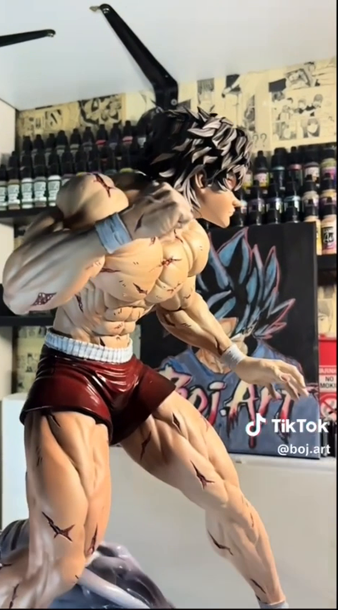
Original · 941,791 octets
5b70a2d5caf57b6a5ce742b53dcf4296cdceedd5fab75d8edb86c0b1a8fdbcb9BOJ.ART V17 / THE REVEAL BEHIND THE MONOLITH. A four-second uninterrupted premium CINEMATIC CAMERA MOVE in an enormous dark brutalist art gallery. The START IMAGE is the pristine EMPTY GALLERY with a
Original · 5,510,179 octets
5fe8e1eb1870069be7fe6d02191b6d28f42ab9c7d2bd0fa1f4d25a72d7cff8cfRéférence source — input-032
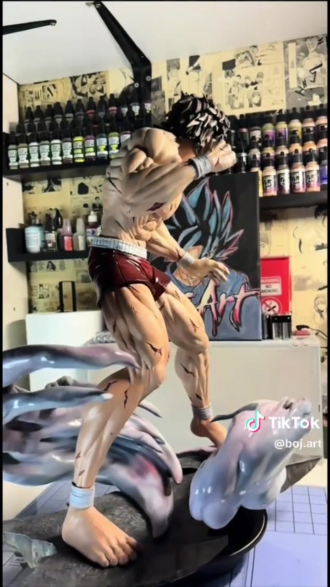
Original · 151,079 octets
6d6d31919d1a3d4647dabecc55a9cdc50a384b5d0067a2e6b95c31bf31999809BOJ.ART / TEST 38 — PAINT HAS A PULSE. Make an original eight-second vertical 9:16 animated VFX film, not a posed product demonstration. Reference images 1 and 2 are photographs of the REAL hero sculp
Original · 12,312,469 octets
726806c4246d937b6b5f0fddf459955fa5bb22159aeb16d9a9752ad81d8e233dBOJ.ART V27 — ORIGINAL MANGA OPENING / SHOT A / THE EYES HAVE A SOUL. Animate the EXACT SAME original black-haired, amber-red-eyed sculptural CGI hero in the supplied start image. Preserve his distinc
Original · 13,800,274 octets
72843f4bab16fe523d8d2d7931891974b08322e37730c45258abc0f1ba9c788aRéférence source — input-019
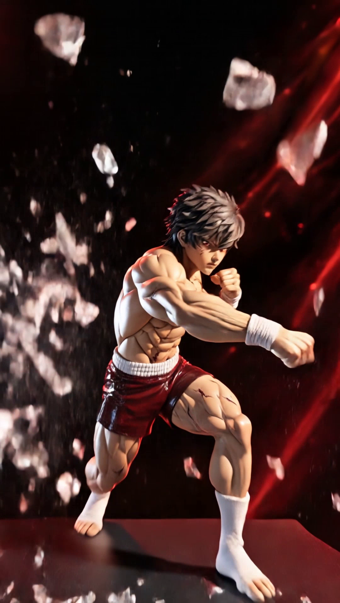
Original · 1,967,940 octets
744a682245a1486661f93b20f75b5aaa4c48c3821f240c99699ec7e3942c6b4eBOJ.ART V17 — END FRAME / THE IMPOSSIBLE GALLERY. Create a photorealistic high-budget CINEMATIC 9:16 vertical frame for the END of a seamless camera transition, based on the two REAL photographs of th
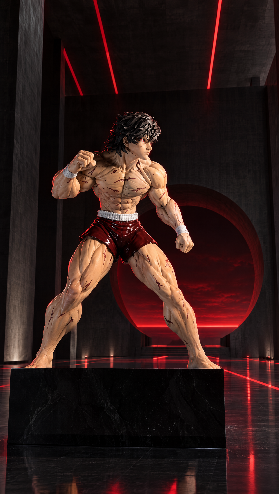
Original · 4,672,893 octets
7640a910b1d06d3ff67d41ca45df3fa538166afbc86782083d9a6dd5188a248dIMG_4535.jpeg
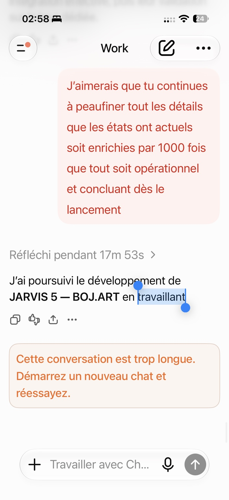
Original · 187,238 octets
76e89067b5b878e3b046b1cd2eacc0456401bfa7962d28850785845fb0494bb8Référence source — input-039
Original · 2,031,231 octets
7de597ac287b415f4bfe81229f79856a124a84a2c2b6aab3bf3e1fbdd60a1531Référence source — input-020
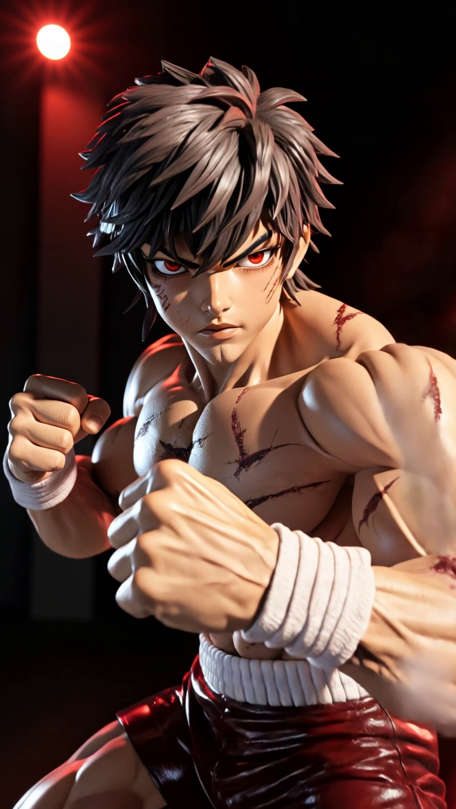
Original · 2,585,252 octets
7f6e9a83cfbe3eb3a4bb8c1622d87171706a58947de3e8ce842a8b5b22f288d1BOJ.ART V12 TEST 37 — SCULPTURE HERO / PREMIUM FINISH. Three-second continuous final shot from EXACTLY the supplied red-black arena frame and combat guard. The subject is the real hand-painted sculptu
Original · 4,904,551 octets
82943e11c39f65e43d76efa5e14eeadf7c89cc8c0a0695d2f8f8fb8dbd154eceBOJ.ART — V16 / IMPACT ALIVE. Animate this EXACT supplied premium cinematic keyframe of the REAL painted-resin collectible breaking through glass. Keep the original keyframe as the literal first frame
Original · 14,591,401 octets
869ceb412a6ce24be5397b0e6dbe75b17fd9ab220a0d978c423cd88da3ccbe7aBOJ.ART V29 / SHOT 01 — THE DIMENSION BREAK, ORIGINAL PREMIUM MANGA EDIT. A continuous 4-second high-end VFX transition starting EXACTLY on the provided realistic museum photograph of the user's exist
Original · 12,302,383 octets
87a733727755bfb57b34ec2e94cc4b24de84f8674548ab66f875b0078696911cBOJ.ART ORIGINAL PREMIUM VFX — TEST 33 / CAMERA INSIDE THE FRACTURE. A five-second 9:16 original high-end VFX editorial shot. Begin on the provided REAL side photograph of the hand-painted resin colle
Original · 12,574,556 octets
8e3b5f111a26b29bfd7684840814a250579f4ccc3bb359d3042b5c7a2b2012e0Référence source — input-004
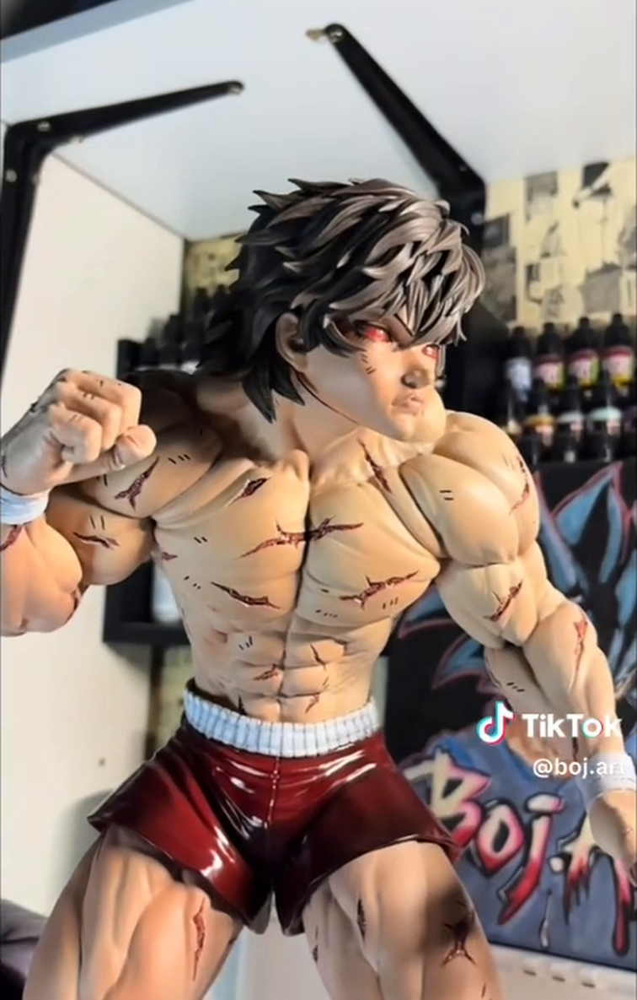
Original · 910,541 octets
91f374ffe50155b7e01583e877fc25a3f8968618d1319bffd666ae19e79a7e65BOJ.ART V19 / ORIGINAL ANIME OPENING INTERLUDE — GRAPHIC LIGHT SWEEP. Create a three-second HIGH-END 3D-TO-2D-TO-3D kinetic VFX insert that starts and ends EXACTLY on the two supplied frames of the SA
Original · 3,566,672 octets
95666a70ca44195df9a5b899e4a2381a98284c79e31a4a3b99d1439cdff00b1bRéférence source — input-028
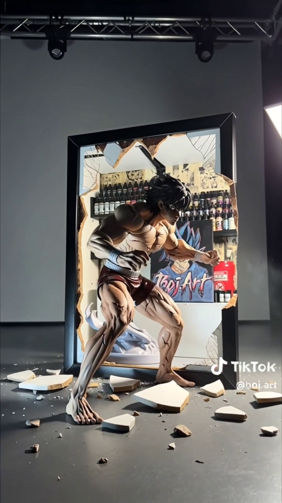
Original · 2,167,784 octets
97c1542a19782c615ce892d2f9bf321b1bf5d3d7b4e251959b28b869f197c903Référence source — input-017
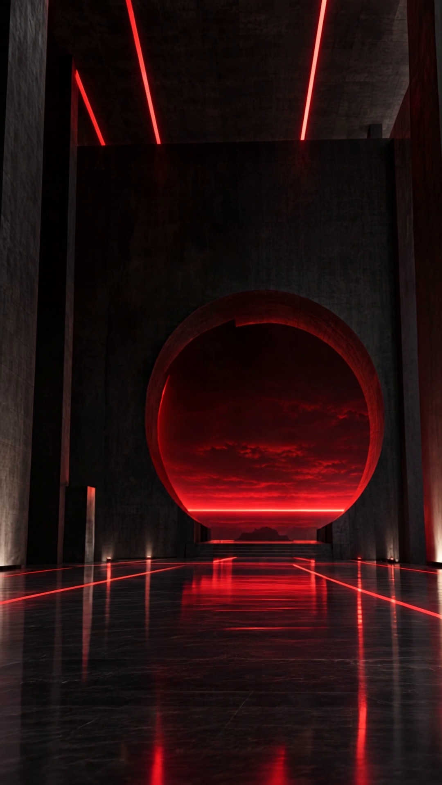
Original · 1,876,117 octets
97d08e2a6d17dc24427519edf5aaed29284a881b5337cb3ffc79c48b273ca790BOJ.ART — V16 / MASTER VFX KEYFRAME: create an original vertical 9:16 premium cinematic key art of the EXACT hand-painted resin collectible in the two attached REAL PHOTOGRAPHS, as if an extraordinary
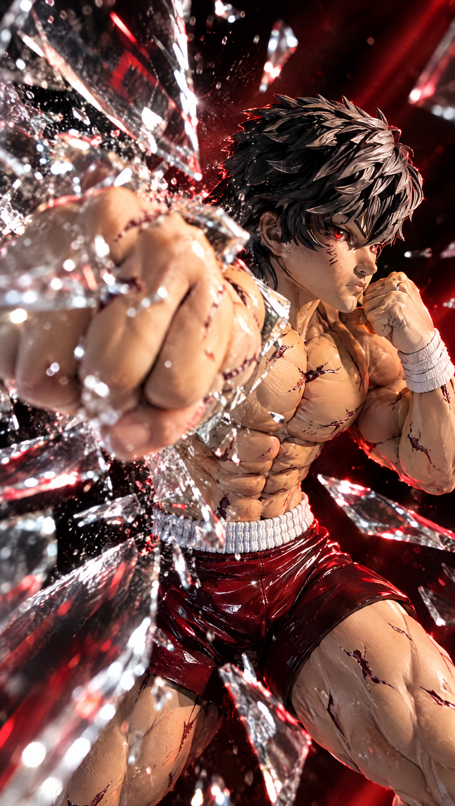
Original · 5,821,769 octets
9e482d6bf754e898b3f624015499ef95cc49a2736167117d28da6a8e2a1b2293BOJ.ART V28 / REAL PRODUCT LOCK — CREATE A PREMIUM PRODUCT HERO KEYFRAME FROM THE TWO PROVIDED PHOTOS OF THE ACTUAL HAND-PAINTED RESIN SCULPTURE. This is an exact representation of the user's EXISTING
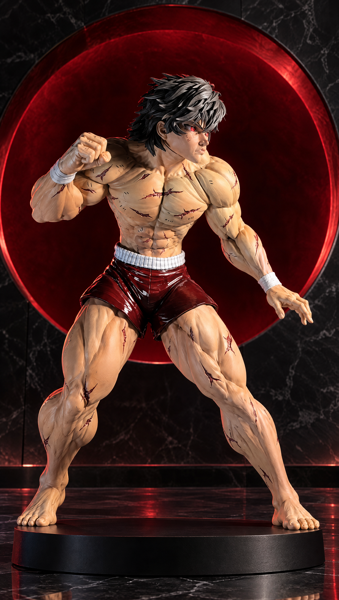
Original · 5,161,374 octets
ac9ba13dd57401f8b4fe0d0e2960181023cf580076d1ea1e81fee4cd0d48fe7dRéférence source — input-014
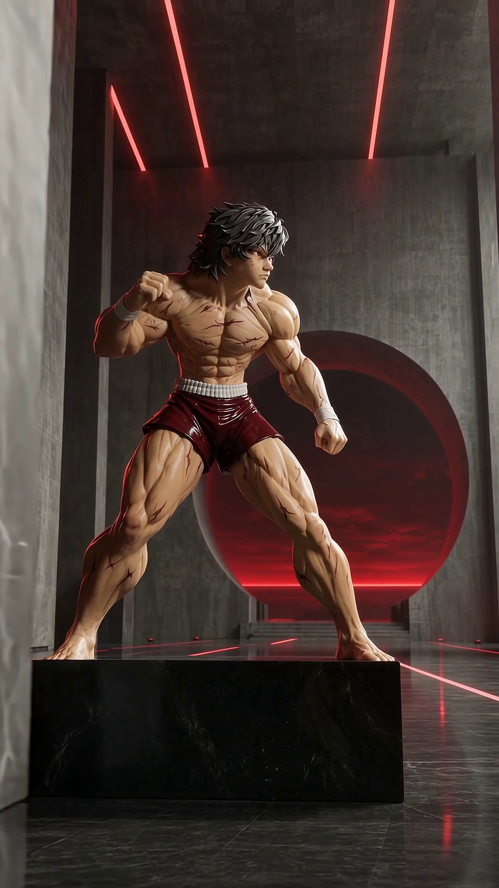
Original · 1,910,838 octets
af4e478df00d48ec2e9438b6a2d76fdce5ee3e6572c454319acfeba855a1cbc0Référence source — input-027
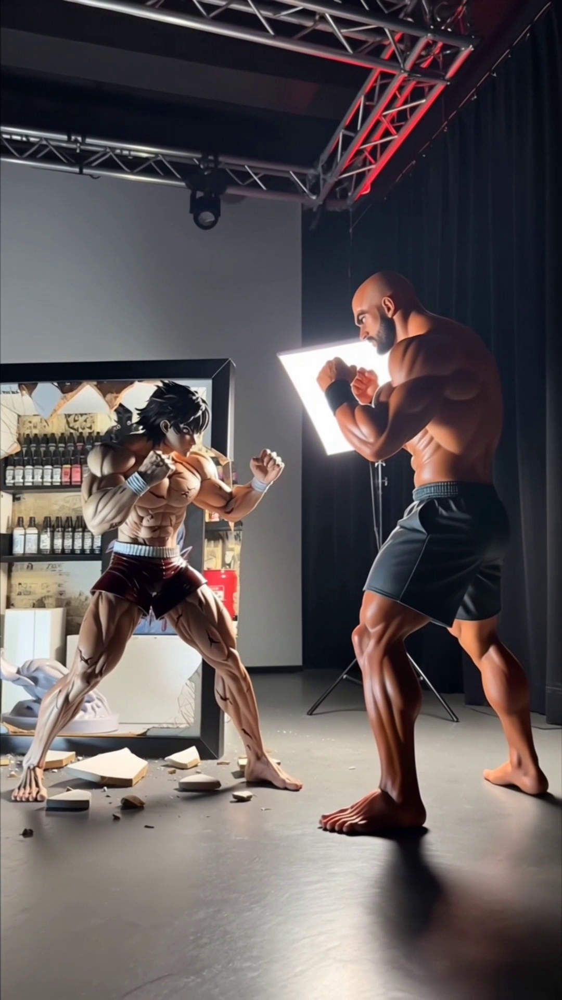
Original · 1,572,617 octets
b48ca1384f0130bc9a56ee635a5c1c89f29a9569468bb5c3cc57d629ee6c1e54BOJ.ART V28 / MANGA INK TRANSFORMATION OF THE EXISTING PHYSICAL SCULPTURE. Use BOTH attached REAL PHOTOS of the user's physical hand-painted resin collectible as the mandatory source of truth for its
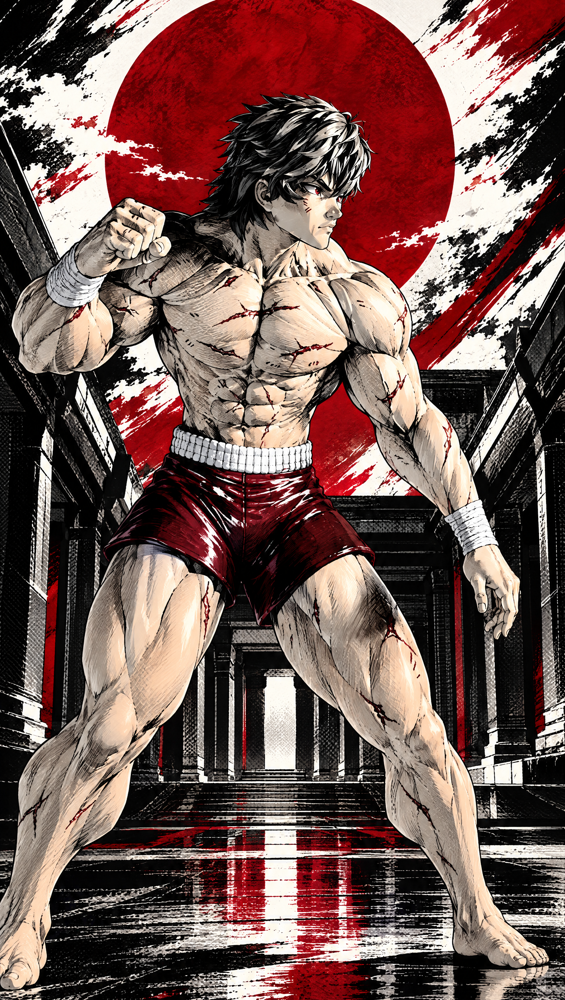
Original · 7,944,582 octets
b865245c6eb9327d2b1cd2ffad832110f276d09e53e56f9c77d3a8a0aaf281c3Référence source — input-031
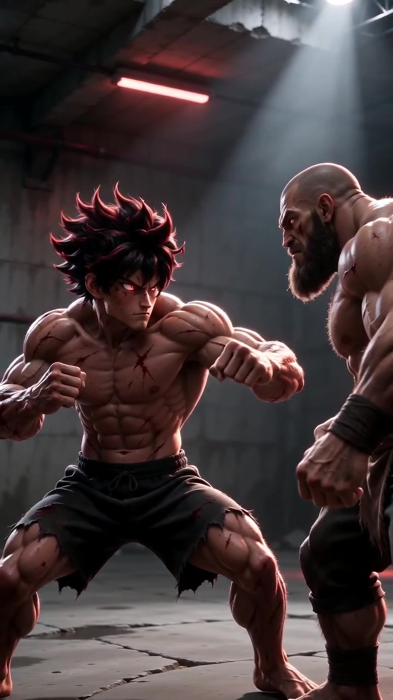
Original · 112,529 octets
bb787726549b4dd1690c8b3c231291ce71c13445c02884716b3071314fe76867BOJ.ART V19 / ORIGINAL ANIME OPENING INTERLUDE — INK-SAKUGA MATCH CUT. A three-second original hybrid 2D/3D cinematic sequence inserted into an existing premium BOJ.ART art-film, beginning EXACTLY on
Original · 5,116,131 octets
c02608dd197b88c9423b963eb430a87a6408b23a56cbed76bcb454bdfd8195a8IMG_4498.jpeg
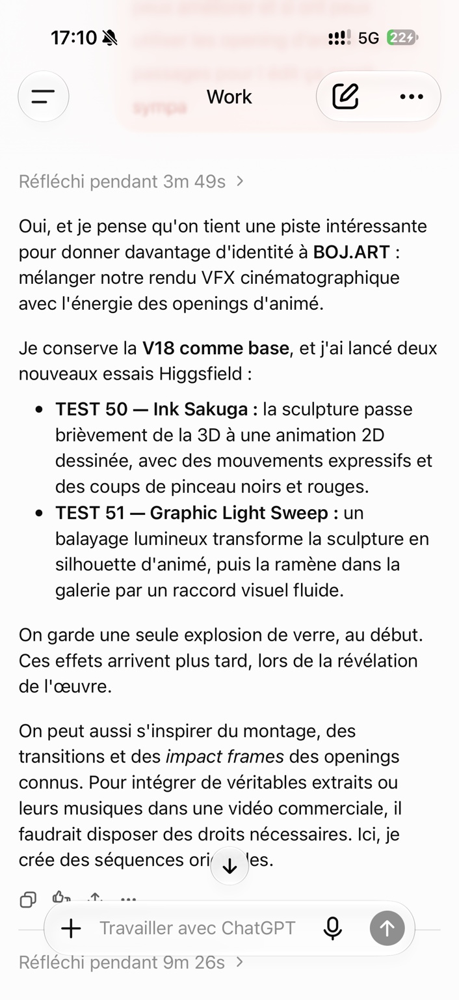
Original · 298,287 octets
c235cd2778468d0f0e915bea1560f7084e794e69cdf2b970c7fa361a7c6b6f59BOJ.ART V18 / PREMIUM VFX EDIT — ENHANCE THE PROVIDED ORIGINAL VIDEO, DO NOT REGENERATE A NEW STORY. Preserve the existing shot's exact 6-second sequence, recognizable BOJ.ART painted resin sculpture,
Original · 6,224,262 octets
d316bab210fc88e7a0d0ee679a91ababd503cf900a60b28026dd1e475db5aed2BOJ.ART V27 — ORIGINAL MANGA OPENING / SHOT B / THE AWAKENING. Animate the EXACT same original hero and gallery from the supplied frame, keeping his angular youthful face, amber-red eyes, thick charco
Original · 16,218,198 octets
d6be3cfe16b481a8326fc0d310671fc00cff1600d63b2b35063abffe8d3c05d7Référence source — input-025
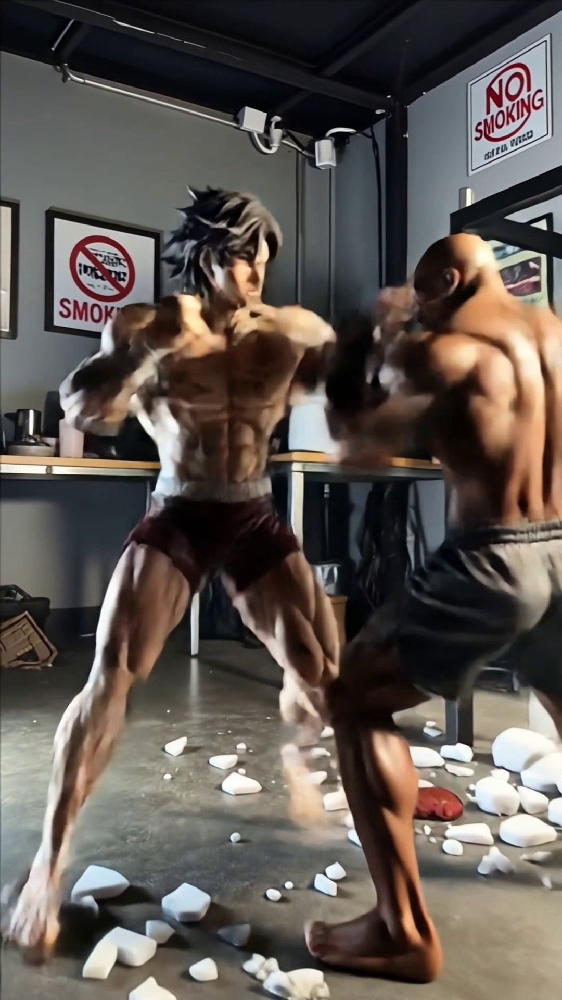
Original · 2,488,060 octets
dd7de40e83e6bfe866b19655e40671b87692b8c5d40d79f76435404a47f17198BOJ.ART V28 — FAITHFUL MANGA ANIMATION OF THE EXISTING PHYSICAL RESIN SCULPTURE, NOT A GENERIC FIGHTER. Animate the supplied premium hand-inked manga drawing with the SAME recognizable sculpted facial
Original · 19,114,878 octets
df209a39e2eae96bc6e6ec2638f6c478ce1e2379b2407ec819af025d266e9531BOJ.ART — ORIGINAL MANGA CINEMATIC CHARACTER MASTER KEYFRAME, 9:16. Develop an ORIGINAL fictional sculptural anime hero for the separate BOJ.ART concept-poster universe, NOT the existing real Baki col
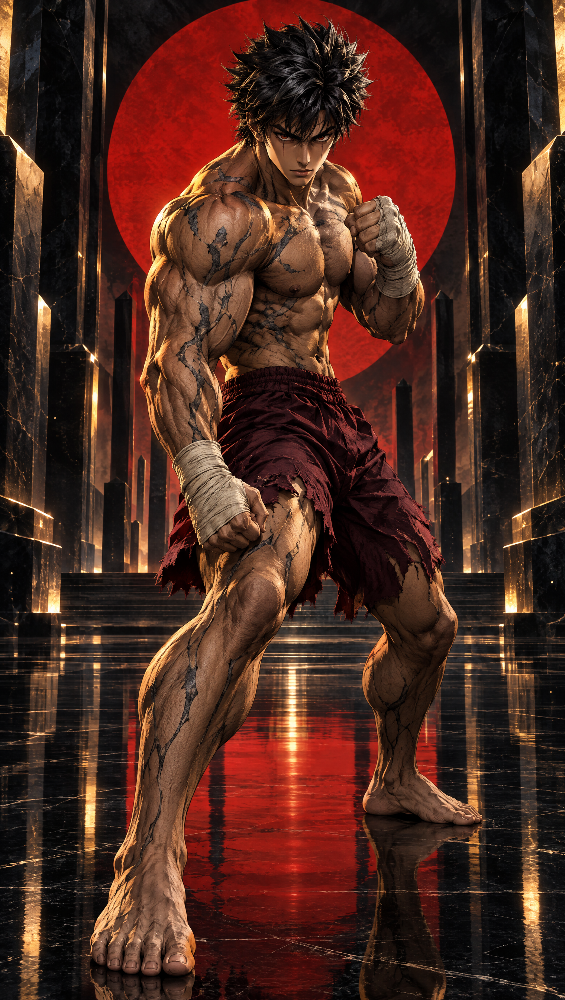
Original · 6,269,847 octets
dfe4d397089161a2670ce3e844c051236569b3aed9dd1839b951935e47025267BOJ.ART V16 — THE IMPOSSIBLE PUNCH / ULTRA-PREMIUM VFX. One continuous FIVE-SECOND vertical 9:16 high-end cinematic shot. The START IMAGE is a photograph of the ACTUAL hand-painted collectible; it mus
Original · 8,667,820 octets
e1f5904b206c61441d9210238aebc9c9888a1d55e46e789c39a962218af5e4c0BOJ.ART V12 TEST 36 — ONE CLEAN EXCHANGE / CONTINUITY PLATE. Four seconds in the EXACT red-black arena in the supplied starting image. Hero is the physical hand-painted collectible <<<a3f3caac-3b58-40
Original · 7,779,794 octets
e24168f9e0f59c2f5738ffd647ac7582d1be9710e5157a42c184bfbfcb7eb3e2Référence source — input-013
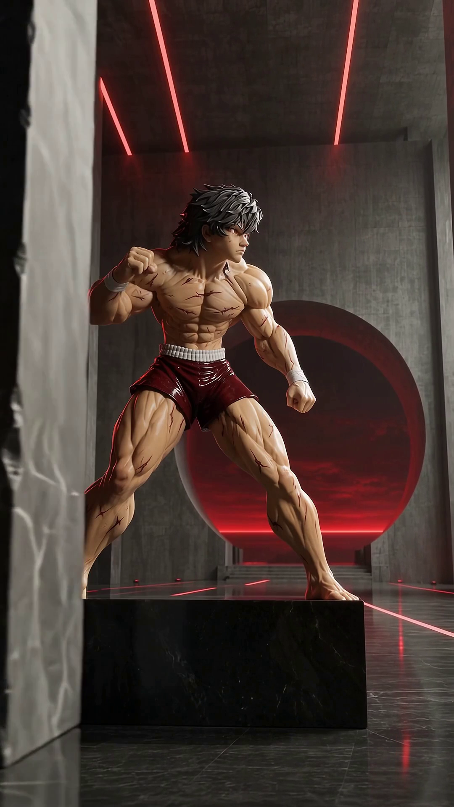
Original · 1,844,794 octets
ebbd7964856bbc68263bc325442b97ef2c8a6f9387602db6e6178e7fe84db9b3BOJ.ART V17 — THE IMPOSSIBLE TRANSITION / SHARD TO MONOLITH. ONE seamless six-second premium cinematic VFX camera move between the two supplied exact keyframes. The START FRAME is an already-completed
Original · 10,325,084 octets
eebb258b2c787c0866fc9b6470a424da101e0992b07c062653137814219fed8bBOJ.ART — ORIGINAL 12-second instrumental premium anime-opening music cue, 172 BPM, E minor. NO VOCALS, NO SPEECH, NO EXISTING SONG OR ANIME THEME. Realistic, soulful and aggressive post-hardcore / ci
Original · 353,791 octets
f020904ac1d0fab0951cbdaebfee9d30b3e25d0d6060d07964b8b7ae5d71b400BOJ.ART V34 — SECOND REAL ANIMATED SHOT, ORIGINAL FICTIONAL MANGA HERO. Use the provided original reference artwork as the strict identity anchor: angular sculptural face, intense amber-red eyes, spik
Original · 7,204,749 octets
f0295126f73322fff05a49f2aa9b54ff544cab18c22e02c0e8edbb35087eff4bBOJ.ART V9 SHOT 23 — DIRECT CONTINUATION / THE CHALLENGE. Continue exactly from the starting image, not a new scene. The hero is <<<a3f3caac-3b58-407d-b539-89ebb1f66045>>>; the reference element is fo
Original · 10,815,372 octets
f3e4d0a06f74ff69536cda81b86d0507dae87ef50324e4c010a31b5fd450e223BOJ.ART BREAK THE FRAME — TEST 16 RETURN TO STATUE. Five-second cinematic transition between the supplied start and end images. The first frame is the animated dark-haired martial artist in the indust
Original · 2,555,629 octets
f73101eb5883de9a48912acd724a3d65d5f9c0e31e2993fcb28d082a5883aeafBOJ.ART ORIGINAL PREMIUM VFX — TEST 32 / THE GLASS THRESHOLD. A four-second vertical cinematic commercial shot, starting EXACTLY on the supplied REAL frontal photograph of a hand-painted muscular coll
Original · 9,563,620 octets
f9d58f4bfb90af4d206cdc72f6aad1f7181a47385eb6e365f05ee231208af2d1Référence source — input-026
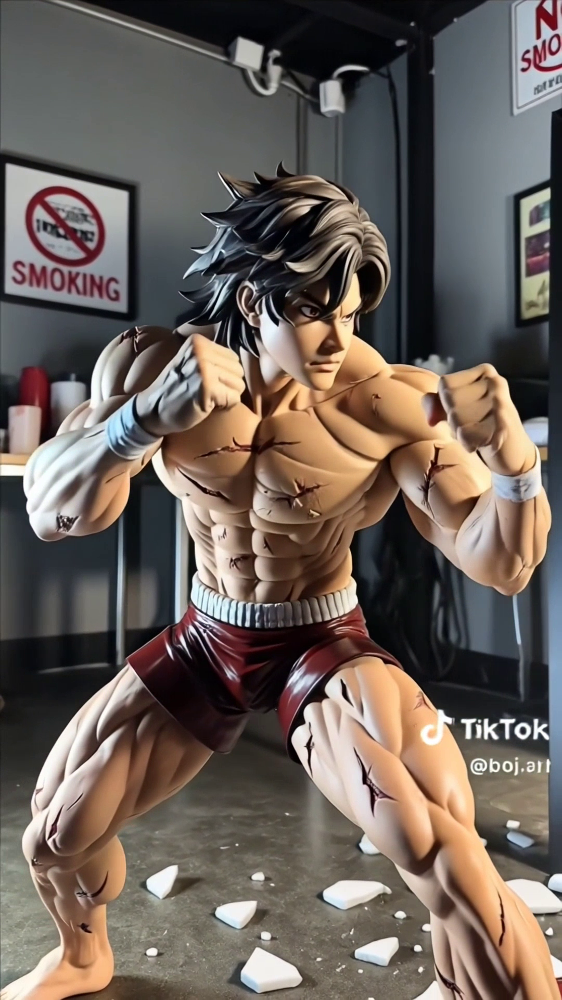
Original · 3,093,488 octets
fa7f8691e937e9c3ad753b94907a2c7c025813b4328b946d075b9b2ed9e280ecBOJ.ART / ANIMATED MANGA EDIT — original character animation, NOT a static poster, NOT a new still image. Use the ORIGINAL fictional character from the supplied start reference: distinctive black spik
Original · 6,092,100 octets
fac190d4e29651f412c43063f2417fda4ef5fc97c8d5a149a668ba19183f3fe0